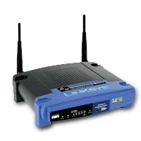
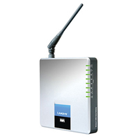

Free
computer Tutorials
|
Free
computer Tutorials
|
|
 home home |
Stay at Home and Learn | ||||
Beginners Guide to going Wireless |
|||||
|
Wireless Routers
What is a Router?A standard modem allows you to connect one computer to the internet at a time. A router allows you to connect one or more computers at a time:
It's called a router for the simple reason that signals are being routed back and forth. The computers can be connected to the router either with a wire (called an Ethernet Cable), or without wires. We're interested in a Wireless Router. Here's a picture of one:  This model is a Linksys, one of the big players in the wireless game. Other big players are Belkin, D-Link and Netgear. Notice the two anetennas sticking out. Most wireless routers have at least one. The antennas can be unscrewed and replaced by something bigger and more powerful. Data from the internet will travel through the router and then those antennas. They are then broadcast to the Wireless Adaptor on your computer or laptop. (And any other wireless adaptor in range - whether it's yours or not! See the security section below for how to solve this)
Wireless JargonThere's a lot of jargon associated with the wireless router you buy. In the previous section, we discussed what 802.11g was. The 802.11 is a common standard that helps devices talk to each other. The g is an improvement to the 802.11 standard. However, as of September 14th 2009, a new standard has finally been ratified, seven years after it was first put forward! The new standard is 802.11n. This newer standard offers faster and more reliable wireless signals. You have been able to get Draft N routers for some time now. But the ratification of the treaty by manufacturers means that a wireless adaptor bought from one company should work with another's routers, and vice versa. Another bit of jargon you'll see is MIMO. This stands for Multiple-Input Multiple-Output. Which does, of course, tell you nothing! But MIMO is a technology aimed at giving you a better range for your wireless signals, and can carry more data in those signals (throughput). But you need a wireless adaptor that supports the MIMO technology, if you buy a wireless router with the words MIMO on it. If you have a 3G connection, look out for MiFi. This is a way to share computers using a 3G connection, rather than a fixed line ADSL connection, or cable broadband. With a MiFi router you insert your SIM card into, and this connects to the internet, rather than your USB dongle. The router should then let you connect several computers to the Internet at once using wireless, ethernet, or both.
What's involved in setting up a Wireless ADSL Router?Manufacturers like Linksys are making it easier to set up wireless routers. Look for an Installation CD, or a Quick setup option. At the very least, there should be some instructions to follow along with. If you have an ADSL broadband connection, then you'll want to buy a wireless router with a ADSL modem built in. (It will say this on the box.) The model below, for example, is Linksys WAG200G - Wireless-G ADSL Home Gateway:  The ADSL in the product name means it has an in-built ADSL modem. In other words, you won't need the modem that your Internet Service Provider gave you. If you look at the image below, you'll see a socket for Line (the white one). You plug your phone cable (called and RJ11) in to this socket. At the moment, you probably have this cable plugged in to a USB modem that you got from your internet provider:
The four yellow sockets are for ethernet cables, allowing you to connect up to four computers with a wired connection (as well as the wireless computers). But the wireless router above comes with a User Guide and Setup Wizard on CD-ROM, and it will explain all this as you're setting it up. The first step is usually to set up your router with a direct cable connection. (Called an Ethernet or Network cable. This is usually supplied with the router). The wizard should then take you through a few steps to get you connected to the router, and on to the Internet. Before you do this, you should contact your ISP and get any router setting they may have. You'll also need your broadband username and password. But once you have a wired connection set up, you can then set up a wireless connection. When you have your wireless connection up and running, you can then unplug the Network cable. Look out for all those lights on your router. You'll see the following lights on the Linksys WAG200G - Wireless-G ADSL router above: Power Turns Green when you plug the power cable in Wireless Turns green if you get a successful wireless connection. Flashes green if data is being transferred from the wireless adaptor on your computer Ethernet Turns green if the supplied Network cable is plugged in correctly to the router and computer. Starts flashing green when data is being transferred DSL This is the ADSL light. It starts flashing green if it can't get a connection from your phone sockets. If it stays solid then your ADSL connection is OK Internet Tells you whether the connection to your Internet Service Provider is OK. Will be solid green if everything is OK. This light will be red if the connection fails (if there's outage at your ISPs end, for example.)
What's involved in setting up a Wireless Cable Router?If you don't have an ADSL connection, but have a cable broadband connection, then don't buy an ADSL wireless router. You want one that you can plug your modem in to. Look for any wireless router that DOESN'T have the words ADSL in the title. The modem you got from your ISP will probably be connected to your computer via an ethernet cable. Unfortunately, you can't just plug this in to your shiny new wireless router and expect it to work! When you plug your Ethernet cable in to your computer, you're plugging it in to an ethernet card. Your ethernet card has a unique address called a MAC address. Cable providers connect you via the MAC address of your ethernet card. Your new router will have a different MAC address. So if you plug your ethernet cable in to this, your provider won't know where you are, and you won't get any web pages! The good news is that there's something called MAC address spoofing. This is when the router pretends to be your ethernet card. If you get a wireless router like the Buffalo AirStation G54 High Power then the install process will take care of this for you. The process will be fairly painless. The bad news is that some routers expect you to do all this for yourself! The manual will then explain how to get the MAC address of your ethernet card, and how to enter this information in to the router. The wireless cable routers we've chosen on our recommended pages all have easy setup options for MAC address spoofing.
If something goes wrong, then you may need to gain access to what's called the Configuration pages. What are Router Configuration Pages?Each router will have what's called Configuration pages. You access these through a browser like Internet Explorer or Firefox. These don't come from the Internet, though, so you don't need an active broadband connection to see them. In the configuration pages, you can do things like set your broadband username and password, set up wireless security, set up online gaming, see the current status of your connection, and a whole lot more besides. To get in to the configuration pages, you need to be connected to your router. This can either be with the Network cable, or via your wireless adaptor. Start up your browser, and enter the address for your router. These differ, but for the Linksys router it will be: http://192.168.1.1 You will then be asked for a username and password. Routers will have a default for both of these. For the Linksys, it's admin for the username and admin for the password. (Look in your manual for the router's address and default username and password.) Click OK and you'll be in to your configuration pages. If you can't see any configuration pages then the connection from your computer to the router is not working. So don't blame your ISP! Time to pour over those manuals!
Wireless SecurityAnother thing you may need to do in the config pages is to set up wireless security. If you don't have security switched on, anyone within range of your wireless router will be able to connect to it. There are two forms of security that most wireless routers use, WEP and WPA. What you are doing here is encrypting your signals with a key. With wireless security turned on, the router needs your key before it will allow any traffic through it. No key means no access. WEP The WEP key, though, will be either 64 bits or 128 bits in length. (128 bits is 26 characters, and will be mixture of the numbers 0 to 9 and the letters A to F.) If you have a Livebox from Orange, for example, then it comes with WEP security. When setting up the router for a wireless connection, you have type out all 26 characters. Get one wrong and it won't connect! WPA A lot of wireless routers don't have security turned on by default. Your configuration pages will allow you to turn it on, and there is usually a help menu which explain the various security settings.
In the next section, we'll take a look at what exactly a wireless signal is.
< --Why you need a Wireless Adaptor | What are wireless signals? --> |